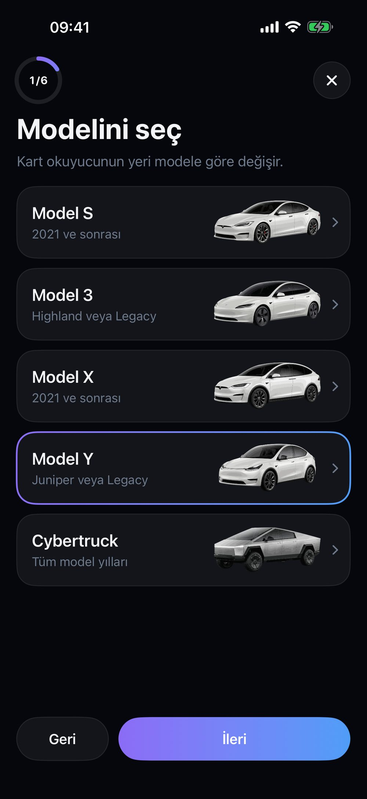
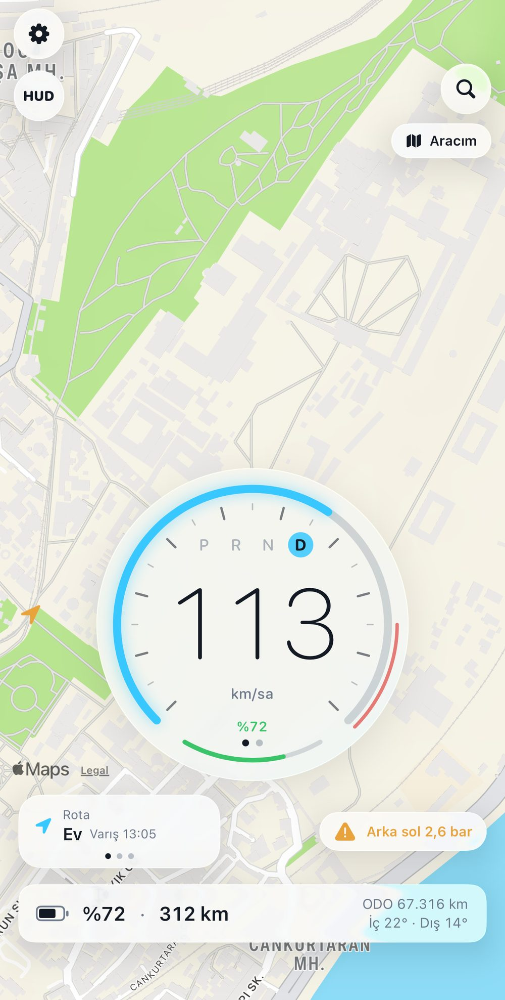
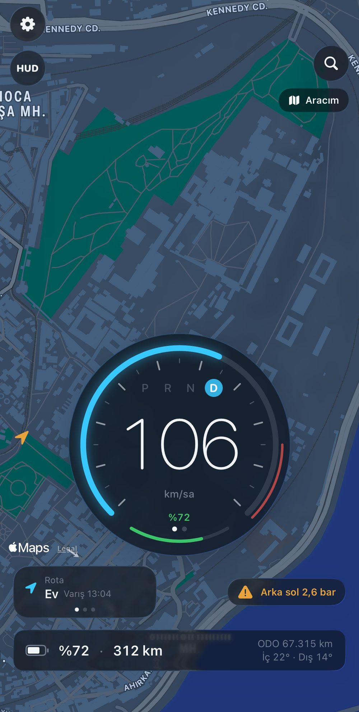
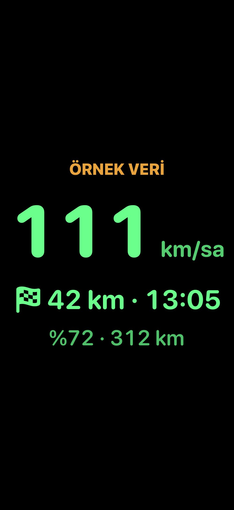
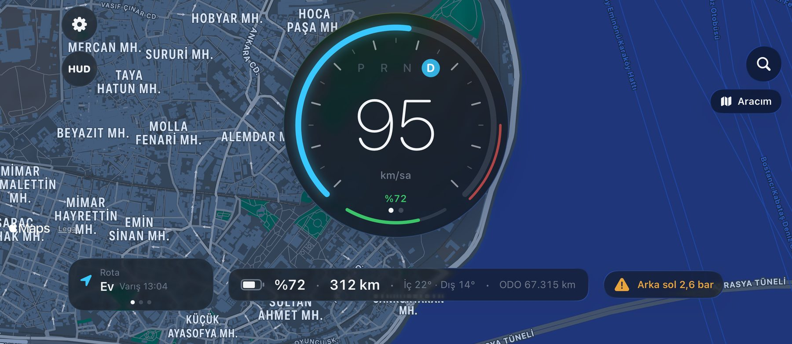

Bir kez eşleştir, sonra kendiliğinden bağlanır.
İlk açılışta altı kısa adımlık bir sihirbaz seni götürür. Bir kez eşleştirdikten sonra telefonun araca yaklaştığında Kadra kendiliğinden bağlanır.
Modelini ve sürümünü seç
Model S, 3, X, Y ya da Cybertruck. Kart okuyucunun yeri modele göre değiştiği için sihirbaz sana nereye bakacağını gösterir.
VIN numaranı gir
Kadra aracını Bluetooth'ta bu numarayla arar ve bulur.
Anahtar kartını okut
Kartı okuyucuya dokundur, aracın ekranında çıkan isteği onayla. Eşleşme bu kadar.

Tutucuya koy, yola bak.
Kadran hız, güç ve vitesi gösterir; altında batarya, menzil, sıcaklıklar ve kilometre. Lastik basıncı düşerse uyarı kendiliğinden çıkar.




Kokpit ücretsiz.
Haritayı ve kişiselleştirmeyi Tam sürüm açar. Karar vermeden önce hepsini 5 saat boyunca ücretsiz kullanabilirsin: haritadaki “5 saat ücretsiz dene” düğmesine dokunman yeterli.
Ücretsiz
Hesap açmadan, sınırsız.
- Canlı hız, güç, vites ve geri kazanım
- Batarya, menzil, iç ve dış sıcaklık, kilometre
- Dört lastiğin ayrı ayrı basıncı
- Şarjda kilit ekranında canlı kart
- Şarj ve ön iklimlendirme programları, EKO skoru
- HUD ve Klasik kadran
Tam sürüm
Aylık ya da yıllık abonelik.
- Apple ya da Google haritası, aracın konumuyla
- Adım adım navigasyon ve yol üstü şarj istasyonları
- Yön kilidi: harita gidiş yönüne döner
- Şerit, Gradyan ve Kapsül kadranları
- Motor sesi
Verilerin telefonunda kalır, çünkü gidecekleri bir sunucu yok.
Kadra'ya kayıt olmazsın, şifre girmezsin. Araçla telefon arasındaki her şey Bluetooth üzerinden geçer. Harita açıkken konumun yalnız harita ve yol tarifi için Apple'a ya da Google'a gider; haritayı kapatırsan uygulama hiç internete çıkmaz. Denemek kolay: telefonu uçak moduna al, Kadra çalışmaya devam eder.
Kadra yalnızca okur. Kapı açamaz, aracı süremez, ayar değiştiremez; aracın paylaştığı bilgiyi gösterir. Uygulamayı kapattığında araca soru sormayı bırakır, uyuyan aracı sen istemedikçe uyandırmaz. Ayrıntılar gizlilik politikasında.
Sık sorulanlar
Hangi araçlarla çalışır?
Bluetooth anahtarını destekleyen Tesla Model S, 3, X, Y ve Cybertruck. Kurulum sihirbazı modeline ve sürümüne göre yol gösterir.
Aracımın bataryasını tüketir mi?
Hayır. Uygulama arka plana geçince sorgular durur, araç park hâlindeyken bir süre ekrana dokunulmazsa kendini duraklatır. Uyuyan araç uyandırılmaz.
İnternet olmadan çalışır mı?
Evet. Araç bağlantısı tamamen Bluetooth üzerindendir; internet yalnız harita ve navigasyon için gerekir.
Tesla uygulamasının yerini mi alır?
Hayır, yanında çalışır. Kadra sürüş sırasında bakılacak bir gösterge panelidir; aracı uzaktan yönetmez.
Aboneliği nasıl iptal ederim?
iPhone'da Ayarlar'da adına dokun, Abonelikler'e gir ve Kadra'yı seç. İptal dönem sonunda geçerli olur.